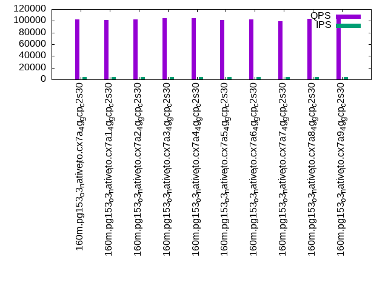

This is a report for the insert benchmark with 160M docs and 8 client(s). It is generated by scripts (bash, awk, sed) and Tufte might not be impressed. An overview of the insert benchmark is here and a short update is here. Below, by DBMS, I mean DBMS+version.config. An example is my8020.c10b40 where my means MySQL, 8020 is version 8.0.20 and c10b40 is the name for the configuration file.
The test server is a c2-standard-30 with 15 cores, hyperthreads disabled, 120G RAM and XFS with SW RAID 0 across 4 NVMe SSD. The benchmark was run with 8 clients and there were 1 or 3 connections per client (1 for queries or inserts without rate limits, 1+1 for rate limited inserts+deletes). It uses 8 tables, 1 per client. It loads 20M rows per table without secondary indexes, creates secondary indexes, then inserts 100M rows per table with a delete per insert to avoid growing the table. It then does 3 read+write tests for 1800s each that do queries as fast as possible with 100, 500 and then 1000 inserts/second/client concurrent with the queries and 1000 deletes/second to avoid growing the table. The database is cached by the OS page cache but not by Postgres Clients and the DBMS share one server. The per-database configs are in the per-database subdirectories here.
The tested DBMS are:
The numbers are inserts/s for l.i0 and l.i1, indexed docs (or rows) /s for l.x and queries/s for q*.2. The values are the average rate over the entire test for inserts (IPS) and queries (QPS). The range of values for IPS and QPS is split into 3 parts: bottom 25%, middle 50%, top 25%. Values in the bottom 25% have a red background, values in the top 25% have a green background and values in the middle have no color. A gray background is used for values that can be ignored because the DBMS did not sustain the target insert rate. Red backgrounds are not used when the minimum value is within 80% of the max value.
| dbms | l.i0 | l.x | l.i1 | q100.1 | q500.1 | q1000.1 |
|---|---|---|---|---|---|---|
| 160m.pg153_o3_native_lto.cx7a_4g_gcp_c2s30 | 1025641 | 2052564 | 77168 | 111272 | 102074 | 92766 |
| 160m.pg153_o3_native_lto.cx7a1_4g_gcp_c2s30 | 1025641 | 2223611 | 79396 | 111452 | 101840 | 95011 |
| 160m.pg153_o3_native_lto.cx7a2_4g_gcp_c2s30 | 1019108 | 2026582 | 61738 | 110753 | 102430 | 96216 |
| 160m.pg153_o3_native_lto.cx7a3_4g_gcp_c2s30 | 1025641 | 2052564 | 84450 | 111747 | 104138 | 97812 |
| 160m.pg153_o3_native_lto.cx7a4_4g_gcp_c2s30 | 1025641 | 2052564 | 78609 | 110683 | 104727 | 98766 |
| 160m.pg153_o3_native_lto.cx7a5_4g_gcp_c2s30 | 1019108 | 2052564 | 75729 | 110099 | 101192 | 92963 |
| 160m.pg153_o3_native_lto.cx7a6_4g_gcp_c2s30 | 1019108 | 2079221 | 61662 | 110254 | 102121 | 92036 |
| 160m.pg153_o3_native_lto.cx7a7_4g_gcp_c2s30 | 1032258 | 2254930 | 42644 | 110168 | 99342 | 80577 |
| 160m.pg153_o3_native_lto.cx7a8_4g_gcp_c2s30 | 1019108 | 2079221 | 88525 | 111587 | 103699 | 96941 |
| 160m.pg153_o3_native_lto.cx7a9_4g_gcp_c2s30 | 1012658 | 2026582 | 78632 | 111082 | 104033 | 98696 |
This table has relative throughput, throughput for the DBMS relative to the DBMS in the first line, using the absolute throughput from the previous table.
| dbms | l.i0 | l.x | l.i1 | q100.1 | q500.1 | q1000.1 |
|---|---|---|---|---|---|---|
| 160m.pg153_o3_native_lto.cx7a_4g_gcp_c2s30 | 1.00 | 1.00 | 1.00 | 1.00 | 1.00 | 1.00 |
| 160m.pg153_o3_native_lto.cx7a1_4g_gcp_c2s30 | 1.00 | 1.08 | 1.03 | 1.00 | 1.00 | 1.02 |
| 160m.pg153_o3_native_lto.cx7a2_4g_gcp_c2s30 | 0.99 | 0.99 | 0.80 | 1.00 | 1.00 | 1.04 |
| 160m.pg153_o3_native_lto.cx7a3_4g_gcp_c2s30 | 1.00 | 1.00 | 1.09 | 1.00 | 1.02 | 1.05 |
| 160m.pg153_o3_native_lto.cx7a4_4g_gcp_c2s30 | 1.00 | 1.00 | 1.02 | 0.99 | 1.03 | 1.06 |
| 160m.pg153_o3_native_lto.cx7a5_4g_gcp_c2s30 | 0.99 | 1.00 | 0.98 | 0.99 | 0.99 | 1.00 |
| 160m.pg153_o3_native_lto.cx7a6_4g_gcp_c2s30 | 0.99 | 1.01 | 0.80 | 0.99 | 1.00 | 0.99 |
| 160m.pg153_o3_native_lto.cx7a7_4g_gcp_c2s30 | 1.01 | 1.10 | 0.55 | 0.99 | 0.97 | 0.87 |
| 160m.pg153_o3_native_lto.cx7a8_4g_gcp_c2s30 | 0.99 | 1.01 | 1.15 | 1.00 | 1.02 | 1.05 |
| 160m.pg153_o3_native_lto.cx7a9_4g_gcp_c2s30 | 0.99 | 0.99 | 1.02 | 1.00 | 1.02 | 1.06 |
This lists the average rate of inserts/s for the tests that do inserts concurrent with queries. For such tests the query rate is listed in the table above. The read+write tests are setup so that the insert rate should match the target rate every second. Cells that are not at least 95% of the target have a red background to indicate a failure to satisfy the target.
| dbms | q100.1 | q500.1 | q1000.1 |
|---|---|---|---|
| pg153_o3_native_lto.cx7a_4g_gcp_c2s30 | 797 | 3988 | 7976 |
| pg153_o3_native_lto.cx7a1_4g_gcp_c2s30 | 798 | 3987 | 7976 |
| pg153_o3_native_lto.cx7a2_4g_gcp_c2s30 | 797 | 3987 | 7976 |
| pg153_o3_native_lto.cx7a3_4g_gcp_c2s30 | 797 | 3988 | 7976 |
| pg153_o3_native_lto.cx7a4_4g_gcp_c2s30 | 797 | 3987 | 7976 |
| pg153_o3_native_lto.cx7a5_4g_gcp_c2s30 | 797 | 3988 | 7976 |
| pg153_o3_native_lto.cx7a6_4g_gcp_c2s30 | 797 | 3987 | 7976 |
| pg153_o3_native_lto.cx7a7_4g_gcp_c2s30 | 797 | 3987 | 7978 |
| pg153_o3_native_lto.cx7a8_4g_gcp_c2s30 | 797 | 3988 | 7978 |
| pg153_o3_native_lto.cx7a9_4g_gcp_c2s30 | 797 | 3987 | 7976 |
| target | 800 | 4000 | 8000 |
l.i0: load without secondary indexes. Graphs for performance per 1-second interval are here.
Average throughput:
Insert response time histogram: each cell has the percentage of responses that take <= the time in the header and max is the max response time in seconds. For the max column values in the top 25% of the range have a red background and in the bottom 25% of the range have a green background. The red background is not used when the min value is within 80% of the max value.
| dbms | 256us | 1ms | 4ms | 16ms | 64ms | 256ms | 1s | 4s | 16s | gt | max |
|---|---|---|---|---|---|---|---|---|---|---|---|
| pg153_o3_native_lto.cx7a_4g_gcp_c2s30 | 98.237 | 1.686 | 0.050 | 0.010 | 0.017 | 0.001 | 0.571 | ||||
| pg153_o3_native_lto.cx7a1_4g_gcp_c2s30 | 98.216 | 1.703 | 0.056 | 0.008 | 0.015 | 0.003 | 0.380 | ||||
| pg153_o3_native_lto.cx7a2_4g_gcp_c2s30 | 97.870 | 2.051 | 0.052 | 0.009 | 0.017 | 0.001 | 0.441 | ||||
| pg153_o3_native_lto.cx7a3_4g_gcp_c2s30 | 98.046 | 1.876 | 0.053 | 0.007 | 0.016 | 0.002 | 0.414 | ||||
| pg153_o3_native_lto.cx7a4_4g_gcp_c2s30 | 97.823 | 2.098 | 0.051 | 0.007 | 0.021 | 0.001 | 0.327 | ||||
| pg153_o3_native_lto.cx7a5_4g_gcp_c2s30 | 97.977 | 1.948 | 0.048 | 0.008 | 0.016 | 0.003 | 0.420 | ||||
| pg153_o3_native_lto.cx7a6_4g_gcp_c2s30 | 97.893 | 2.031 | 0.050 | 0.008 | 0.014 | 0.003 | 0.380 | ||||
| pg153_o3_native_lto.cx7a7_4g_gcp_c2s30 | 97.934 | 1.991 | 0.050 | 0.011 | 0.014 | 0.001 | 0.287 | ||||
| pg153_o3_native_lto.cx7a8_4g_gcp_c2s30 | 97.822 | 2.112 | 0.039 | 0.007 | 0.017 | 0.002 | 0.437 | ||||
| pg153_o3_native_lto.cx7a9_4g_gcp_c2s30 | 97.923 | 2.007 | 0.044 | 0.007 | 0.017 | 0.002 | 0.544 |
Delete response time histogram: each cell has the percentage of responses that take <= the time in the header and max is the max response time in seconds. For the max column values in the top 25% of the range have a red background and in the bottom 25% of the range have a green background. The red background is not used when the min value is within 80% of the max value.
| dbms | 0.000 | sum:DBMS | |||||||||
|---|---|---|---|---|---|---|---|---|---|---|---|
| pg153_o3_native_lto.cx7a_4g_gcp_c2s30 | |||||||||||
| pg153_o3_native_lto.cx7a1_4g_gcp_c2s30 | |||||||||||
| pg153_o3_native_lto.cx7a2_4g_gcp_c2s30 | |||||||||||
| pg153_o3_native_lto.cx7a3_4g_gcp_c2s30 | |||||||||||
| pg153_o3_native_lto.cx7a4_4g_gcp_c2s30 | |||||||||||
| pg153_o3_native_lto.cx7a5_4g_gcp_c2s30 | |||||||||||
| pg153_o3_native_lto.cx7a6_4g_gcp_c2s30 | |||||||||||
| pg153_o3_native_lto.cx7a7_4g_gcp_c2s30 | |||||||||||
| pg153_o3_native_lto.cx7a8_4g_gcp_c2s30 | |||||||||||
| pg153_o3_native_lto.cx7a9_4g_gcp_c2s30 |
Performance metrics for the DBMS listed above. Some are normalized by throughput, others are not. Legend for results is here.
ips qps rps rmbps wps wmbps rpq rkbpq wpi wkbpi csps cpups cspq cpupq dbgb1 dbgb2 rss maxop p50 p99 tag 1025641 0 20 0.1 4888.1 404.6 0.000 0.000 0.005 0.404 83957 75.0 0.082 11 15.3 41.4 NA 0.571 149638 35961 160m.pg153_o3_native_lto.cx7a_4g_gcp_c2s30 1025641 0 20 0.1 5111.2 406.4 0.000 0.000 0.005 0.406 84405 75.3 0.082 11 15.3 41.4 0.0 0.380 149538 22575 160m.pg153_o3_native_lto.cx7a1_4g_gcp_c2s30 1019108 0 16 0.1 5124.7 403.8 0.000 0.000 0.005 0.406 84867 75.2 0.083 11 15.3 41.4 0.0 0.441 147840 31266 160m.pg153_o3_native_lto.cx7a2_4g_gcp_c2s30 1025641 0 9 0.0 5106.5 405.4 0.000 0.000 0.005 0.405 84046 75.2 0.082 11 15.3 41.4 0.0 0.414 149737 36161 160m.pg153_o3_native_lto.cx7a3_4g_gcp_c2s30 1025641 0 18 0.1 5122.5 404.4 0.000 0.000 0.005 0.404 84066 75.5 0.082 11 15.3 41.4 0.0 0.327 148539 43753 160m.pg153_o3_native_lto.cx7a4_4g_gcp_c2s30 1019108 0 14 0.1 5081.6 408.8 0.000 0.000 0.005 0.411 84386 75.3 0.083 11 15.3 41.4 0.0 0.420 147737 27979 160m.pg153_o3_native_lto.cx7a5_4g_gcp_c2s30 1019108 0 22 0.1 5127.2 406.3 0.000 0.000 0.005 0.408 84680 75.4 0.083 11 15.3 41.4 0.0 0.380 147337 35774 160m.pg153_o3_native_lto.cx7a6_4g_gcp_c2s30 1032258 0 0 0.0 3465.7 338.3 0.000 0.000 0.003 0.336 87024 75.8 0.084 11 15.3 31.4 0.0 0.287 147120 38373 160m.pg153_o3_native_lto.cx7a7_4g_gcp_c2s30 1019108 0 21 0.1 3696.0 378.5 0.000 0.000 0.004 0.380 84430 75.2 0.083 11 15.3 41.4 0.0 0.437 148137 43553 160m.pg153_o3_native_lto.cx7a8_4g_gcp_c2s30 1012658 0 20 0.1 5072.5 405.7 0.000 0.000 0.005 0.410 84059 75.5 0.083 11 15.3 41.4 0.0 0.544 147938 16588 160m.pg153_o3_native_lto.cx7a9_4g_gcp_c2s30
l.x: create secondary indexes.
Average throughput:
Performance metrics for the DBMS listed above. Some are normalized by throughput, others are not. Legend for results is here.
ips qps rps rmbps wps wmbps rpq rkbpq wpi wkbpi csps cpups cspq cpupq dbgb1 dbgb2 rss maxop p50 p99 tag 2052564 0 2646 12.2 1705.2 582.2 0.001 0.006 0.001 0.290 20986 36.4 0.010 3 29.4 68.3 0.0 0.002 NA NA 160m.pg153_o3_native_lto.cx7a_4g_gcp_c2s30 2223611 0 2494 11.9 1529.1 503.9 0.001 0.005 0.001 0.232 10030 40.1 0.005 3 29.4 63.3 0.0 0.002 NA NA 160m.pg153_o3_native_lto.cx7a1_4g_gcp_c2s30 2026582 0 2560 11.8 1756.3 580.9 0.001 0.006 0.001 0.293 15728 36.2 0.008 3 29.4 68.3 0.0 0.002 NA NA 160m.pg153_o3_native_lto.cx7a2_4g_gcp_c2s30 2052564 0 2750 12.8 1742.1 589.6 0.001 0.006 0.001 0.294 23526 36.6 0.011 3 29.4 68.3 0.0 0.002 NA NA 160m.pg153_o3_native_lto.cx7a3_4g_gcp_c2s30 2052564 0 2598 11.9 1742.8 567.3 0.001 0.006 0.001 0.283 21033 36.7 0.010 3 29.4 68.3 0.0 0.002 NA NA 160m.pg153_o3_native_lto.cx7a4_4g_gcp_c2s30 2052564 0 2497 11.5 1703.8 572.1 0.001 0.006 0.001 0.285 23417 36.9 0.011 3 29.4 68.3 0.0 0.002 NA NA 160m.pg153_o3_native_lto.cx7a5_4g_gcp_c2s30 2079221 0 2425 11.0 1753.9 583.9 0.001 0.005 0.001 0.288 23544 36.9 0.011 3 29.4 68.3 0.0 0.002 NA NA 160m.pg153_o3_native_lto.cx7a6_4g_gcp_c2s30 2254930 0 0 0.0 1658.3 487.0 0.000 0.000 0.001 0.221 34303 38.9 0.015 3 29.4 45.5 0.0 0.001 NA NA 160m.pg153_o3_native_lto.cx7a7_4g_gcp_c2s30 2079221 0 4975 29.2 3373.4 627.9 0.002 0.014 0.002 0.309 18468 38.0 0.009 3 29.4 67.5 0.0 0.002 NA NA 160m.pg153_o3_native_lto.cx7a8_4g_gcp_c2s30 2026582 0 2765 12.8 1712.6 571.2 0.001 0.006 0.001 0.289 13918 37.1 0.007 3 29.4 68.3 0.0 0.002 NA NA 160m.pg153_o3_native_lto.cx7a9_4g_gcp_c2s30
l.i1: continue load after secondary indexes created. Graphs for performance per 1-second interval are here.
Average throughput:
Insert response time histogram: each cell has the percentage of responses that take <= the time in the header and max is the max response time in seconds. For the max column values in the top 25% of the range have a red background and in the bottom 25% of the range have a green background. The red background is not used when the min value is within 80% of the max value.
| dbms | 256us | 1ms | 4ms | 16ms | 64ms | 256ms | 1s | 4s | 16s | gt | max |
|---|---|---|---|---|---|---|---|---|---|---|---|
| pg153_o3_native_lto.cx7a_4g_gcp_c2s30 | 0.105 | 77.340 | 19.902 | 2.589 | 0.064 | nonzero | 0.265 | ||||
| pg153_o3_native_lto.cx7a1_4g_gcp_c2s30 | 0.432 | 79.111 | 17.816 | 2.585 | 0.055 | nonzero | 0.318 | ||||
| pg153_o3_native_lto.cx7a2_4g_gcp_c2s30 | 0.034 | 58.730 | 36.248 | 4.987 | 0.001 | nonzero | 0.317 | ||||
| pg153_o3_native_lto.cx7a3_4g_gcp_c2s30 | 0.359 | 85.499 | 11.518 | 2.587 | 0.037 | nonzero | 0.412 | ||||
| pg153_o3_native_lto.cx7a4_4g_gcp_c2s30 | 0.200 | 79.256 | 17.852 | 2.636 | 0.057 | nonzero | 0.542 | ||||
| pg153_o3_native_lto.cx7a5_4g_gcp_c2s30 | 0.295 | 77.248 | 19.461 | 2.941 | 0.056 | nonzero | 0.416 | ||||
| pg153_o3_native_lto.cx7a6_4g_gcp_c2s30 | nonzero | 57.905 | 37.152 | 4.941 | 0.001 | 0.149 | |||||
| pg153_o3_native_lto.cx7a7_4g_gcp_c2s30 | 0.035 | 21.578 | 67.489 | 10.528 | 0.370 | nonzero | 0.344 | ||||
| pg153_o3_native_lto.cx7a8_4g_gcp_c2s30 | 0.954 | 81.087 | 16.131 | 1.779 | 0.049 | nonzero | 0.412 | ||||
| pg153_o3_native_lto.cx7a9_4g_gcp_c2s30 | 0.185 | 79.486 | 17.497 | 2.773 | 0.059 | nonzero | 0.410 |
Delete response time histogram: each cell has the percentage of responses that take <= the time in the header and max is the max response time in seconds. For the max column values in the top 25% of the range have a red background and in the bottom 25% of the range have a green background. The red background is not used when the min value is within 80% of the max value.
| dbms | 256us | 1ms | 4ms | 16ms | 64ms | 256ms | 1s | 4s | 16s | gt | max |
|---|---|---|---|---|---|---|---|---|---|---|---|
| pg153_o3_native_lto.cx7a_4g_gcp_c2s30 | 84.938 | 5.463 | 0.472 | 4.280 | 4.839 | 0.008 | nonzero | 0.362 | |||
| pg153_o3_native_lto.cx7a1_4g_gcp_c2s30 | 83.926 | 7.978 | 0.485 | 3.699 | 3.907 | 0.006 | nonzero | 0.318 | |||
| pg153_o3_native_lto.cx7a2_4g_gcp_c2s30 | 76.415 | 8.542 | 0.612 | 9.466 | 4.963 | 0.002 | 0.001 | 0.658 | |||
| pg153_o3_native_lto.cx7a3_4g_gcp_c2s30 | 87.094 | 5.267 | 0.506 | 3.406 | 3.725 | 0.002 | nonzero | 0.311 | |||
| pg153_o3_native_lto.cx7a4_4g_gcp_c2s30 | 84.715 | 6.344 | 0.536 | 4.119 | 4.280 | 0.006 | nonzero | 0.773 | |||
| pg153_o3_native_lto.cx7a5_4g_gcp_c2s30 | 84.371 | 6.175 | 0.480 | 4.512 | 4.455 | 0.007 | nonzero | 0.639 | |||
| pg153_o3_native_lto.cx7a6_4g_gcp_c2s30 | 75.131 | 9.876 | 0.604 | 9.418 | 4.969 | 0.002 | 0.001 | 0.705 | |||
| pg153_o3_native_lto.cx7a7_4g_gcp_c2s30 | 73.608 | 10.970 | 0.754 | 9.282 | 5.314 | 0.071 | nonzero | 0.527 | |||
| pg153_o3_native_lto.cx7a8_4g_gcp_c2s30 | 84.456 | 6.130 | 0.626 | 4.416 | 4.362 | 0.010 | nonzero | 0.406 | |||
| pg153_o3_native_lto.cx7a9_4g_gcp_c2s30 | 84.340 | 6.676 | 0.543 | 4.234 | 4.200 | 0.007 | nonzero | 0.816 |
Performance metrics for the DBMS listed above. Some are normalized by throughput, others are not. Legend for results is here.
ips qps rps rmbps wps wmbps rpq rkbpq wpi wkbpi csps cpups cspq cpupq dbgb1 dbgb2 rss maxop p50 p99 tag 77168 0 6165 74.1 92087.7 1361.2 0.080 0.984 1.193 18.063 58944 50.3 0.764 98 50.7 111.4 0.0 0.265 10538 1899 160m.pg153_o3_native_lto.cx7a_4g_gcp_c2s30 79396 0 4757 63.8 91155.0 1358.9 0.060 0.822 1.148 17.526 58291 49.4 0.734 93 51.6 98.9 NA 0.318 10743 2048 160m.pg153_o3_native_lto.cx7a1_4g_gcp_c2s30 61738 0 4948 55.1 151107.2 1422.2 0.080 0.913 2.448 23.588 48950 47.5 0.793 115 49.0 102.5 0.0 0.317 8341 2098 160m.pg153_o3_native_lto.cx7a2_4g_gcp_c2s30 84450 0 3968 54.8 90900.3 1386.9 0.047 0.664 1.076 16.817 59495 50.7 0.704 90 51.8 78.8 0.0 0.412 11088 2048 160m.pg153_o3_native_lto.cx7a3_4g_gcp_c2s30 78609 0 5259 66.8 91850.9 1360.2 0.067 0.870 1.168 17.719 58457 50.0 0.744 95 50.9 120.9 0.0 0.542 10489 2049 160m.pg153_o3_native_lto.cx7a4_4g_gcp_c2s30 75729 0 5801 71.1 91084.9 1340.5 0.077 0.961 1.203 18.127 57957 49.3 0.765 98 51.0 111.0 0.0 0.416 9993 1948 160m.pg153_o3_native_lto.cx7a5_4g_gcp_c2s30 61662 0 4953 55.4 150825.2 1421.0 0.080 0.921 2.446 23.599 49162 47.7 0.797 116 49.0 102.7 0.0 0.149 8291 2098 160m.pg153_o3_native_lto.cx7a6_4g_gcp_c2s30 42644 0 21884 172.4 82724.8 1151.2 0.513 4.141 1.940 27.644 54994 36.9 1.290 130 49.6 65.6 0.0 0.344 4545 1499 160m.pg153_o3_native_lto.cx7a7_4g_gcp_c2s30 88525 0 7113 82.8 88393.1 1258.5 0.080 0.958 0.999 14.557 59779 52.5 0.675 89 50.7 115.1 0.0 0.412 11238 1948 160m.pg153_o3_native_lto.cx7a8_4g_gcp_c2s30 78632 0 5323 67.1 92066.0 1367.5 0.068 0.873 1.171 17.809 58543 50.4 0.745 96 50.9 121.0 0.0 0.410 10688 1948 160m.pg153_o3_native_lto.cx7a9_4g_gcp_c2s30
q100.1: range queries with 100 insert/s per client. Graphs for performance per 1-second interval are here.
Average throughput:
Query response time histogram: each cell has the percentage of responses that take <= the time in the header and max is the max response time in seconds. For max values in the top 25% of the range have a red background and in the bottom 25% of the range have a green background. The red background is not used when the min value is within 80% of the max value.
| dbms | 256us | 1ms | 4ms | 16ms | 64ms | 256ms | 1s | 4s | 16s | gt | max |
|---|---|---|---|---|---|---|---|---|---|---|---|
| pg153_o3_native_lto.cx7a_4g_gcp_c2s30 | 99.975 | 0.024 | 0.001 | nonzero | nonzero | nonzero | 0.096 | ||||
| pg153_o3_native_lto.cx7a1_4g_gcp_c2s30 | 99.977 | 0.021 | 0.001 | nonzero | nonzero | nonzero | 0.101 | ||||
| pg153_o3_native_lto.cx7a2_4g_gcp_c2s30 | 99.982 | 0.017 | 0.001 | nonzero | nonzero | 0.035 | |||||
| pg153_o3_native_lto.cx7a3_4g_gcp_c2s30 | 99.977 | 0.022 | 0.001 | nonzero | nonzero | nonzero | 0.118 | ||||
| pg153_o3_native_lto.cx7a4_4g_gcp_c2s30 | 99.976 | 0.024 | 0.001 | nonzero | nonzero | nonzero | 0.090 | ||||
| pg153_o3_native_lto.cx7a5_4g_gcp_c2s30 | 99.964 | 0.035 | 0.001 | nonzero | nonzero | nonzero | 0.118 | ||||
| pg153_o3_native_lto.cx7a6_4g_gcp_c2s30 | 99.976 | 0.023 | 0.001 | nonzero | nonzero | 0.030 | |||||
| pg153_o3_native_lto.cx7a7_4g_gcp_c2s30 | 99.976 | 0.023 | 0.001 | nonzero | nonzero | nonzero | 0.117 | ||||
| pg153_o3_native_lto.cx7a8_4g_gcp_c2s30 | 99.971 | 0.028 | 0.001 | nonzero | nonzero | nonzero | 0.113 | ||||
| pg153_o3_native_lto.cx7a9_4g_gcp_c2s30 | 99.974 | 0.025 | 0.001 | nonzero | nonzero | 0.033 |
Insert response time histogram: each cell has the percentage of responses that take <= the time in the header and max is the max response time in seconds. For max values in the top 25% of the range have a red background and in the bottom 25% of the range have a green background. The red background is not used when the min value is within 80% of the max value.
| dbms | 256us | 1ms | 4ms | 16ms | 64ms | 256ms | 1s | 4s | 16s | gt | max |
|---|---|---|---|---|---|---|---|---|---|---|---|
| pg153_o3_native_lto.cx7a_4g_gcp_c2s30 | 89.642 | 10.293 | 0.061 | 0.003 | 0.198 | ||||||
| pg153_o3_native_lto.cx7a1_4g_gcp_c2s30 | 87.000 | 12.965 | 0.033 | 0.002 | 0.086 | ||||||
| pg153_o3_native_lto.cx7a2_4g_gcp_c2s30 | 86.845 | 13.132 | 0.023 | 0.029 | |||||||
| pg153_o3_native_lto.cx7a3_4g_gcp_c2s30 | 94.882 | 5.036 | 0.082 | 0.063 | |||||||
| pg153_o3_native_lto.cx7a4_4g_gcp_c2s30 | 88.656 | 11.210 | 0.125 | 0.009 | 0.070 | ||||||
| pg153_o3_native_lto.cx7a5_4g_gcp_c2s30 | 87.530 | 12.266 | 0.189 | 0.016 | 0.078 | ||||||
| pg153_o3_native_lto.cx7a6_4g_gcp_c2s30 | 87.248 | 12.734 | 0.017 | 0.024 | |||||||
| pg153_o3_native_lto.cx7a7_4g_gcp_c2s30 | 81.030 | 18.917 | 0.047 | 0.007 | 0.110 | ||||||
| pg153_o3_native_lto.cx7a8_4g_gcp_c2s30 | 91.283 | 8.642 | 0.075 | 0.062 | |||||||
| pg153_o3_native_lto.cx7a9_4g_gcp_c2s30 | 79.087 | 20.866 | 0.045 | 0.002 | 0.068 |
Delete response time histogram: each cell has the percentage of responses that take <= the time in the header and max is the max response time in seconds. For max values in the top 25% of the range have a red background and in the bottom 25% of the range have a green background. The red background is not used when the min value is within 80% of the max value.
| dbms | 256us | 1ms | 4ms | 16ms | 64ms | 256ms | 1s | 4s | 16s | gt | max |
|---|---|---|---|---|---|---|---|---|---|---|---|
| pg153_o3_native_lto.cx7a_4g_gcp_c2s30 | 45.873 | 28.503 | 25.604 | 0.019 | 0.005 | ||||||
| pg153_o3_native_lto.cx7a1_4g_gcp_c2s30 | 57.085 | 35.726 | 7.186 | 0.003 | 0.005 | ||||||
| pg153_o3_native_lto.cx7a2_4g_gcp_c2s30 | 51.016 | 37.236 | 11.743 | 0.005 | 0.009 | ||||||
| pg153_o3_native_lto.cx7a3_4g_gcp_c2s30 | 57.101 | 35.493 | 7.398 | 0.009 | 0.007 | ||||||
| pg153_o3_native_lto.cx7a4_4g_gcp_c2s30 | 50.047 | 32.670 | 17.259 | 0.023 | 0.002 | 0.019 | |||||
| pg153_o3_native_lto.cx7a5_4g_gcp_c2s30 | 59.564 | 20.957 | 19.436 | 0.043 | 0.010 | ||||||
| pg153_o3_native_lto.cx7a6_4g_gcp_c2s30 | 57.698 | 26.828 | 15.469 | 0.005 | 0.005 | ||||||
| pg153_o3_native_lto.cx7a7_4g_gcp_c2s30 | 72.269 | 25.080 | 2.651 | 0.004 | |||||||
| pg153_o3_native_lto.cx7a8_4g_gcp_c2s30 | 47.757 | 35.340 | 16.889 | 0.014 | 0.010 | ||||||
| pg153_o3_native_lto.cx7a9_4g_gcp_c2s30 | 51.316 | 37.835 | 10.847 | 0.002 | 0.018 |
Performance metrics for the DBMS listed above. Some are normalized by throughput, others are not. Legend for results is here.
ips qps rps rmbps wps wmbps rpq rkbpq wpi wkbpi csps cpups cspq cpupq dbgb1 dbgb2 rss maxop p50 p99 tag 797 111272 298 2.0 3588.2 149.7 0.003 0.018 4.500 192.321 424936 53.0 3.819 71 50.7 75.9 0.0 0.096 13921 13218 160m.pg153_o3_native_lto.cx7a_4g_gcp_c2s30 798 111452 249 1.3 3462.8 109.2 0.002 0.012 4.342 140.271 425370 53.0 3.817 71 51.6 74.4 0.0 0.101 13905 13303 160m.pg153_o3_native_lto.cx7a1_4g_gcp_c2s30 797 110753 298 1.6 3398.5 50.2 0.003 0.015 4.263 64.456 422933 53.0 3.819 72 49.0 71.9 0.0 0.035 13894 13414 160m.pg153_o3_native_lto.cx7a2_4g_gcp_c2s30 797 111747 250 1.7 3452.9 90.9 0.002 0.016 4.331 116.763 426019 52.8 3.812 71 51.8 75.6 0.0 0.118 14081 13889 160m.pg153_o3_native_lto.cx7a3_4g_gcp_c2s30 797 110683 314 2.4 3437.1 57.2 0.003 0.022 4.311 73.524 421943 52.8 3.812 72 50.9 120.9 0.0 0.090 13841 13569 160m.pg153_o3_native_lto.cx7a4_4g_gcp_c2s30 797 110099 358 2.9 3542.2 126.8 0.003 0.027 4.443 162.850 420698 52.9 3.821 72 50.9 75.0 0.0 0.118 13825 12498 160m.pg153_o3_native_lto.cx7a5_4g_gcp_c2s30 797 110254 326 1.9 3456.9 67.8 0.003 0.017 4.336 87.035 421097 52.9 3.819 72 49.0 71.7 0.0 0.030 13745 12866 160m.pg153_o3_native_lto.cx7a6_4g_gcp_c2s30 797 110168 562 3.4 3502.5 182.9 0.005 0.032 4.393 234.897 420875 53.0 3.820 72 49.6 60.6 0.0 0.117 13681 13447 160m.pg153_o3_native_lto.cx7a7_4g_gcp_c2s30 797 111587 346 2.4 3489.9 98.9 0.003 0.022 4.377 127.022 426105 53.2 3.819 72 50.7 77.8 0.0 0.113 14112 12003 160m.pg153_o3_native_lto.cx7a8_4g_gcp_c2s30 797 111082 465 3.0 3432.6 36.1 0.004 0.028 4.305 46.359 423896 52.9 3.816 71 50.9 115.1 0.0 0.033 14022 13761 160m.pg153_o3_native_lto.cx7a9_4g_gcp_c2s30
q500.1: range queries with 500 insert/s per client. Graphs for performance per 1-second interval are here.
Average throughput:
Query response time histogram: each cell has the percentage of responses that take <= the time in the header and max is the max response time in seconds. For max values in the top 25% of the range have a red background and in the bottom 25% of the range have a green background. The red background is not used when the min value is within 80% of the max value.
| dbms | 256us | 1ms | 4ms | 16ms | 64ms | 256ms | 1s | 4s | 16s | gt | max |
|---|---|---|---|---|---|---|---|---|---|---|---|
| pg153_o3_native_lto.cx7a_4g_gcp_c2s30 | 99.896 | 0.095 | 0.006 | 0.001 | 0.001 | nonzero | 0.181 | ||||
| pg153_o3_native_lto.cx7a1_4g_gcp_c2s30 | 99.899 | 0.089 | 0.012 | 0.001 | nonzero | nonzero | 0.132 | ||||
| pg153_o3_native_lto.cx7a2_4g_gcp_c2s30 | 99.917 | 0.078 | 0.005 | nonzero | nonzero | 0.025 | |||||
| pg153_o3_native_lto.cx7a3_4g_gcp_c2s30 | 99.970 | 0.023 | 0.007 | nonzero | nonzero | 0.049 | |||||
| pg153_o3_native_lto.cx7a4_4g_gcp_c2s30 | 99.957 | 0.038 | 0.005 | nonzero | nonzero | 0.024 | |||||
| pg153_o3_native_lto.cx7a5_4g_gcp_c2s30 | 99.913 | 0.081 | 0.005 | 0.001 | 0.001 | nonzero | 0.165 | ||||
| pg153_o3_native_lto.cx7a6_4g_gcp_c2s30 | 99.909 | 0.084 | 0.006 | nonzero | nonzero | nonzero | 0.160 | ||||
| pg153_o3_native_lto.cx7a7_4g_gcp_c2s30 | 99.888 | 0.101 | 0.007 | 0.002 | 0.002 | nonzero | nonzero | 0.261 | |||
| pg153_o3_native_lto.cx7a8_4g_gcp_c2s30 | 99.909 | 0.085 | 0.005 | 0.001 | nonzero | nonzero | 0.149 | ||||
| pg153_o3_native_lto.cx7a9_4g_gcp_c2s30 | 99.950 | 0.044 | 0.005 | nonzero | nonzero | 0.019 |
Insert response time histogram: each cell has the percentage of responses that take <= the time in the header and max is the max response time in seconds. For max values in the top 25% of the range have a red background and in the bottom 25% of the range have a green background. The red background is not used when the min value is within 80% of the max value.
| dbms | 256us | 1ms | 4ms | 16ms | 64ms | 256ms | 1s | 4s | 16s | gt | max |
|---|---|---|---|---|---|---|---|---|---|---|---|
| pg153_o3_native_lto.cx7a_4g_gcp_c2s30 | 80.564 | 15.860 | 2.952 | 0.623 | 0.240 | ||||||
| pg153_o3_native_lto.cx7a1_4g_gcp_c2s30 | 86.271 | 12.376 | 1.226 | 0.127 | 0.166 | ||||||
| pg153_o3_native_lto.cx7a2_4g_gcp_c2s30 | 88.978 | 10.942 | 0.080 | 0.034 | |||||||
| pg153_o3_native_lto.cx7a3_4g_gcp_c2s30 | 99.269 | 0.641 | 0.090 | 0.063 | |||||||
| pg153_o3_native_lto.cx7a4_4g_gcp_c2s30 | 95.003 | 4.906 | 0.085 | 0.005 | 0.139 | ||||||
| pg153_o3_native_lto.cx7a5_4g_gcp_c2s30 | 84.408 | 13.524 | 1.898 | 0.170 | 0.202 | ||||||
| pg153_o3_native_lto.cx7a6_4g_gcp_c2s30 | 87.409 | 11.674 | 0.860 | 0.057 | 0.193 | ||||||
| pg153_o3_native_lto.cx7a7_4g_gcp_c2s30 | 71.635 | 22.765 | 4.684 | 0.914 | 0.002 | 0.263 | |||||
| pg153_o3_native_lto.cx7a8_4g_gcp_c2s30 | 86.328 | 12.644 | 0.991 | 0.037 | 0.189 | ||||||
| pg153_o3_native_lto.cx7a9_4g_gcp_c2s30 | 95.183 | 4.786 | 0.030 | nonzero | 0.089 |
Delete response time histogram: each cell has the percentage of responses that take <= the time in the header and max is the max response time in seconds. For max values in the top 25% of the range have a red background and in the bottom 25% of the range have a green background. The red background is not used when the min value is within 80% of the max value.
| dbms | 256us | 1ms | 4ms | 16ms | 64ms | 256ms | 1s | 4s | 16s | gt | max |
|---|---|---|---|---|---|---|---|---|---|---|---|
| pg153_o3_native_lto.cx7a_4g_gcp_c2s30 | 78.041 | 2.368 | 2.790 | 16.405 | 0.324 | 0.073 | 0.182 | ||||
| pg153_o3_native_lto.cx7a1_4g_gcp_c2s30 | 75.120 | 3.492 | 3.447 | 17.815 | 0.110 | 0.016 | 0.140 | ||||
| pg153_o3_native_lto.cx7a2_4g_gcp_c2s30 | 76.873 | 2.594 | 2.798 | 17.674 | 0.061 | 0.040 | |||||
| pg153_o3_native_lto.cx7a3_4g_gcp_c2s30 | 76.251 | 2.402 | 3.707 | 17.602 | 0.037 | nonzero | 0.087 | ||||
| pg153_o3_native_lto.cx7a4_4g_gcp_c2s30 | 76.136 | 2.731 | 4.589 | 16.461 | 0.082 | 0.050 | |||||
| pg153_o3_native_lto.cx7a5_4g_gcp_c2s30 | 78.003 | 3.293 | 4.807 | 13.760 | 0.123 | 0.014 | 0.148 | ||||
| pg153_o3_native_lto.cx7a6_4g_gcp_c2s30 | 76.174 | 2.855 | 2.688 | 18.192 | 0.090 | 0.001 | 0.139 | ||||
| pg153_o3_native_lto.cx7a7_4g_gcp_c2s30 | 74.116 | 2.873 | 4.918 | 17.515 | 0.447 | 0.131 | 0.213 | ||||
| pg153_o3_native_lto.cx7a8_4g_gcp_c2s30 | 76.984 | 2.677 | 3.004 | 17.217 | 0.111 | 0.006 | 0.116 | ||||
| pg153_o3_native_lto.cx7a9_4g_gcp_c2s30 | 75.901 | 2.701 | 3.032 | 18.288 | 0.077 | 0.055 |
Performance metrics for the DBMS listed above. Some are normalized by throughput, others are not. Legend for results is here.
ips qps rps rmbps wps wmbps rpq rkbpq wpi wkbpi csps cpups cspq cpupq dbgb1 dbgb2 rss maxop p50 p99 tag 3988 102074 1685 10.4 16471.6 699.9 0.017 0.104 4.130 179.725 391356 54.9 3.834 81 50.7 72.8 0.0 0.181 12898 11092 160m.pg153_o3_native_lto.cx7a_4g_gcp_c2s30 3987 101840 910 5.6 15976.0 511.3 0.009 0.057 4.007 131.322 390308 55.4 3.833 82 51.6 66.7 0.0 0.132 12770 11799 160m.pg153_o3_native_lto.cx7a1_4g_gcp_c2s30 3987 102430 1748 10.4 15786.9 238.8 0.017 0.104 3.960 61.345 392908 55.4 3.836 81 49.0 70.9 0.0 0.025 12759 11939 160m.pg153_o3_native_lto.cx7a2_4g_gcp_c2s30 3988 104138 152 1.4 15942.8 418.1 0.001 0.014 3.998 107.353 397890 55.1 3.821 79 51.8 70.0 0.0 0.049 12978 12402 160m.pg153_o3_native_lto.cx7a3_4g_gcp_c2s30 3987 104727 544 4.0 15769.3 269.2 0.005 0.039 3.955 69.145 398217 55.1 3.802 79 50.9 117.7 0.0 0.024 13218 12307 160m.pg153_o3_native_lto.cx7a4_4g_gcp_c2s30 3988 101192 1727 10.6 16192.0 584.7 0.017 0.108 4.060 150.138 389163 55.1 3.846 82 50.9 72.9 0.0 0.165 12503 10980 160m.pg153_o3_native_lto.cx7a5_4g_gcp_c2s30 3987 102121 1709 10.1 15954.3 308.0 0.017 0.101 4.002 79.113 391698 55.2 3.836 81 49.0 70.8 0.0 0.160 12914 12019 160m.pg153_o3_native_lto.cx7a6_4g_gcp_c2s30 3987 99342 2009 12.4 16522.6 877.2 0.020 0.128 4.144 225.301 382305 54.9 3.848 83 49.6 65.6 0.0 0.261 12450 10420 160m.pg153_o3_native_lto.cx7a7_4g_gcp_c2s30 3988 103699 1675 10.2 15336.3 448.2 0.016 0.101 3.846 115.093 397456 55.4 3.833 80 50.7 73.6 0.0 0.149 13042 12019 160m.pg153_o3_native_lto.cx7a8_4g_gcp_c2s30 3987 104033 791 5.3 15733.1 169.3 0.008 0.052 3.946 43.478 396478 55.2 3.811 80 50.9 102.4 0.0 0.019 13051 12151 160m.pg153_o3_native_lto.cx7a9_4g_gcp_c2s30
q1000.1: range queries with 1000 insert/s per client. Graphs for performance per 1-second interval are here.
Average throughput:
Query response time histogram: each cell has the percentage of responses that take <= the time in the header and max is the max response time in seconds. For max values in the top 25% of the range have a red background and in the bottom 25% of the range have a green background. The red background is not used when the min value is within 80% of the max value.
| dbms | 256us | 1ms | 4ms | 16ms | 64ms | 256ms | 1s | 4s | 16s | gt | max |
|---|---|---|---|---|---|---|---|---|---|---|---|
| pg153_o3_native_lto.cx7a_4g_gcp_c2s30 | 99.665 | 0.293 | 0.026 | 0.010 | 0.005 | nonzero | 0.234 | ||||
| pg153_o3_native_lto.cx7a1_4g_gcp_c2s30 | 99.734 | 0.234 | 0.026 | 0.004 | 0.002 | nonzero | 0.137 | ||||
| pg153_o3_native_lto.cx7a2_4g_gcp_c2s30 | 99.720 | 0.259 | 0.018 | 0.003 | 0.001 | nonzero | 0.105 | ||||
| pg153_o3_native_lto.cx7a3_4g_gcp_c2s30 | 99.882 | 0.102 | 0.015 | 0.001 | nonzero | nonzero | 0.119 | ||||
| pg153_o3_native_lto.cx7a4_4g_gcp_c2s30 | 99.876 | 0.109 | 0.013 | 0.001 | nonzero | nonzero | 0.138 | ||||
| pg153_o3_native_lto.cx7a5_4g_gcp_c2s30 | 99.666 | 0.298 | 0.024 | 0.009 | 0.004 | nonzero | 0.154 | ||||
| pg153_o3_native_lto.cx7a6_4g_gcp_c2s30 | 99.663 | 0.293 | 0.025 | 0.011 | 0.007 | nonzero | 0.149 | ||||
| pg153_o3_native_lto.cx7a7_4g_gcp_c2s30 | 99.184 | 0.699 | 0.057 | 0.036 | 0.022 | 0.001 | nonzero | 0.318 | |||
| pg153_o3_native_lto.cx7a8_4g_gcp_c2s30 | 99.674 | 0.296 | 0.022 | 0.006 | 0.002 | nonzero | 0.186 | ||||
| pg153_o3_native_lto.cx7a9_4g_gcp_c2s30 | 99.838 | 0.145 | 0.015 | 0.002 | nonzero | nonzero | 0.115 |
Insert response time histogram: each cell has the percentage of responses that take <= the time in the header and max is the max response time in seconds. For max values in the top 25% of the range have a red background and in the bottom 25% of the range have a green background. The red background is not used when the min value is within 80% of the max value.
| dbms | 256us | 1ms | 4ms | 16ms | 64ms | 256ms | 1s | 4s | 16s | gt | max |
|---|---|---|---|---|---|---|---|---|---|---|---|
| pg153_o3_native_lto.cx7a_4g_gcp_c2s30 | 79.094 | 16.534 | 3.960 | 0.411 | 0.001 | 0.318 | |||||
| pg153_o3_native_lto.cx7a1_4g_gcp_c2s30 | 84.871 | 13.187 | 1.879 | 0.063 | 0.248 | ||||||
| pg153_o3_native_lto.cx7a2_4g_gcp_c2s30 | 84.867 | 14.551 | 0.561 | 0.021 | 0.187 | ||||||
| pg153_o3_native_lto.cx7a3_4g_gcp_c2s30 | 96.757 | 3.139 | 0.091 | 0.013 | 0.228 | ||||||
| pg153_o3_native_lto.cx7a4_4g_gcp_c2s30 | 95.043 | 4.754 | 0.184 | 0.019 | 0.177 | ||||||
| pg153_o3_native_lto.cx7a5_4g_gcp_c2s30 | 78.245 | 18.575 | 2.996 | 0.184 | nonzero | 0.274 | |||||
| pg153_o3_native_lto.cx7a6_4g_gcp_c2s30 | 80.966 | 16.832 | 2.072 | 0.130 | 0.218 | ||||||
| pg153_o3_native_lto.cx7a7_4g_gcp_c2s30 | 49.766 | 39.472 | 9.538 | 1.216 | 0.007 | 0.542 | |||||
| pg153_o3_native_lto.cx7a8_4g_gcp_c2s30 | 80.743 | 17.240 | 1.926 | 0.091 | nonzero | 0.261 | |||||
| pg153_o3_native_lto.cx7a9_4g_gcp_c2s30 | 93.811 | 5.971 | 0.197 | 0.021 | nonzero | 0.270 |
Delete response time histogram: each cell has the percentage of responses that take <= the time in the header and max is the max response time in seconds. For max values in the top 25% of the range have a red background and in the bottom 25% of the range have a green background. The red background is not used when the min value is within 80% of the max value.
| dbms | 256us | 1ms | 4ms | 16ms | 64ms | 256ms | 1s | 4s | 16s | gt | max |
|---|---|---|---|---|---|---|---|---|---|---|---|
| pg153_o3_native_lto.cx7a_4g_gcp_c2s30 | 77.869 | 4.595 | 1.189 | 12.473 | 3.817 | 0.057 | 0.214 | ||||
| pg153_o3_native_lto.cx7a1_4g_gcp_c2s30 | 76.688 | 4.132 | 2.862 | 13.133 | 3.177 | 0.008 | 0.197 | ||||
| pg153_o3_native_lto.cx7a2_4g_gcp_c2s30 | 77.764 | 4.240 | 1.864 | 12.709 | 3.419 | 0.003 | 0.109 | ||||
| pg153_o3_native_lto.cx7a3_4g_gcp_c2s30 | 78.280 | 3.116 | 2.635 | 13.047 | 2.921 | nonzero | 0.089 | ||||
| pg153_o3_native_lto.cx7a4_4g_gcp_c2s30 | 77.707 | 3.637 | 2.038 | 13.118 | 3.501 | nonzero | 0.070 | ||||
| pg153_o3_native_lto.cx7a5_4g_gcp_c2s30 | 76.095 | 4.767 | 2.557 | 11.837 | 4.717 | 0.027 | 0.156 | ||||
| pg153_o3_native_lto.cx7a6_4g_gcp_c2s30 | 77.805 | 4.337 | 2.312 | 12.829 | 2.710 | 0.009 | 0.171 | ||||
| pg153_o3_native_lto.cx7a7_4g_gcp_c2s30 | 75.959 | 4.299 | 4.481 | 11.657 | 3.480 | 0.123 | nonzero | 0.318 | |||
| pg153_o3_native_lto.cx7a8_4g_gcp_c2s30 | 77.589 | 4.128 | 1.465 | 13.259 | 3.548 | 0.010 | 0.186 | ||||
| pg153_o3_native_lto.cx7a9_4g_gcp_c2s30 | 77.503 | 4.172 | 2.468 | 13.085 | 2.773 | nonzero | 0.075 |
Performance metrics for the DBMS listed above. Some are normalized by throughput, others are not. Legend for results is here.
ips qps rps rmbps wps wmbps rpq rkbpq wpi wkbpi csps cpups cspq cpupq dbgb1 dbgb2 rss maxop p50 p99 tag 7976 92766 2406 15.6 28429.8 819.3 0.026 0.172 3.565 105.194 353933 56.1 3.815 91 50.7 80.0 0.0 0.234 11927 5882 160m.pg153_o3_native_lto.cx7a_4g_gcp_c2s30 7976 95011 1389 9.6 29320.3 844.9 0.015 0.104 3.676 108.476 360592 57.7 3.795 91 51.6 70.7 0.0 0.137 12099 9081 160m.pg153_o3_native_lto.cx7a1_4g_gcp_c2s30 7976 96216 2345 14.6 30598.2 457.2 0.024 0.156 3.836 58.699 365671 58.0 3.801 90 49.0 78.2 0.0 0.105 12099 9014 160m.pg153_o3_native_lto.cx7a2_4g_gcp_c2s30 7976 97812 516 4.7 30179.4 773.4 0.005 0.049 3.784 99.292 370543 57.9 3.788 89 51.7 57.0 0.0 0.119 12263 10868 160m.pg153_o3_native_lto.cx7a3_4g_gcp_c2s30 7976 98766 832 6.3 30358.2 485.1 0.008 0.066 3.806 62.284 369930 58.0 3.746 88 50.9 112.8 0.0 0.138 12514 10213 160m.pg153_o3_native_lto.cx7a4_4g_gcp_c2s30 7976 92963 2431 15.5 29234.0 834.1 0.026 0.170 3.665 107.093 355502 57.0 3.824 92 50.7 80.1 0.0 0.154 11827 7768 160m.pg153_o3_native_lto.cx7a5_4g_gcp_c2s30 7976 92036 2353 14.8 30434.5 569.8 0.026 0.164 3.816 73.162 350963 56.0 3.813 91 49.0 78.1 0.0 0.149 11539 8375 160m.pg153_o3_native_lto.cx7a6_4g_gcp_c2s30 7978 80577 5461 35.3 27365.1 1009.6 0.068 0.449 3.430 129.591 316470 52.1 3.928 97 49.6 65.6 0.0 0.318 10309 4155 160m.pg153_o3_native_lto.cx7a7_4g_gcp_c2s30 7978 96941 2409 15.2 28401.4 782.8 0.025 0.161 3.560 100.472 368251 57.3 3.799 89 50.7 79.8 0.0 0.186 12307 8391 160m.pg153_o3_native_lto.cx7a8_4g_gcp_c2s30 7976 98696 1094 7.8 30353.9 291.5 0.011 0.081 3.806 37.422 370026 58.0 3.749 88 50.9 97.0 0.0 0.115 12546 10377 160m.pg153_o3_native_lto.cx7a9_4g_gcp_c2s30
l.i0: load without secondary indexes
Performance metrics for all DBMS, not just the ones listed above. Some are normalized by throughput, others are not. Legend for results is here.
ips qps rps rmbps wps wmbps rpq rkbpq wpi wkbpi csps cpups cspq cpupq dbgb1 dbgb2 rss maxop p50 p99 tag 1025641 0 20 0.1 4888.1 404.6 0.000 0.000 0.005 0.404 83957 75.0 0.082 11 15.3 41.4 NA 0.571 149638 35961 160m.pg153_o3_native_lto.cx7a_4g_gcp_c2s30 1025641 0 20 0.1 5111.2 406.4 0.000 0.000 0.005 0.406 84405 75.3 0.082 11 15.3 41.4 0.0 0.380 149538 22575 160m.pg153_o3_native_lto.cx7a1_4g_gcp_c2s30 1019108 0 16 0.1 5124.7 403.8 0.000 0.000 0.005 0.406 84867 75.2 0.083 11 15.3 41.4 0.0 0.441 147840 31266 160m.pg153_o3_native_lto.cx7a2_4g_gcp_c2s30 1025641 0 9 0.0 5106.5 405.4 0.000 0.000 0.005 0.405 84046 75.2 0.082 11 15.3 41.4 0.0 0.414 149737 36161 160m.pg153_o3_native_lto.cx7a3_4g_gcp_c2s30 1025641 0 18 0.1 5122.5 404.4 0.000 0.000 0.005 0.404 84066 75.5 0.082 11 15.3 41.4 0.0 0.327 148539 43753 160m.pg153_o3_native_lto.cx7a4_4g_gcp_c2s30 1019108 0 14 0.1 5081.6 408.8 0.000 0.000 0.005 0.411 84386 75.3 0.083 11 15.3 41.4 0.0 0.420 147737 27979 160m.pg153_o3_native_lto.cx7a5_4g_gcp_c2s30 1019108 0 22 0.1 5127.2 406.3 0.000 0.000 0.005 0.408 84680 75.4 0.083 11 15.3 41.4 0.0 0.380 147337 35774 160m.pg153_o3_native_lto.cx7a6_4g_gcp_c2s30 1032258 0 0 0.0 3465.7 338.3 0.000 0.000 0.003 0.336 87024 75.8 0.084 11 15.3 31.4 0.0 0.287 147120 38373 160m.pg153_o3_native_lto.cx7a7_4g_gcp_c2s30 1019108 0 21 0.1 3696.0 378.5 0.000 0.000 0.004 0.380 84430 75.2 0.083 11 15.3 41.4 0.0 0.437 148137 43553 160m.pg153_o3_native_lto.cx7a8_4g_gcp_c2s30 1012658 0 20 0.1 5072.5 405.7 0.000 0.000 0.005 0.410 84059 75.5 0.083 11 15.3 41.4 0.0 0.544 147938 16588 160m.pg153_o3_native_lto.cx7a9_4g_gcp_c2s30
l.x: create secondary indexes
Performance metrics for all DBMS, not just the ones listed above. Some are normalized by throughput, others are not. Legend for results is here.
ips qps rps rmbps wps wmbps rpq rkbpq wpi wkbpi csps cpups cspq cpupq dbgb1 dbgb2 rss maxop p50 p99 tag 2052564 0 2646 12.2 1705.2 582.2 0.001 0.006 0.001 0.290 20986 36.4 0.010 3 29.4 68.3 0.0 0.002 NA NA 160m.pg153_o3_native_lto.cx7a_4g_gcp_c2s30 2223611 0 2494 11.9 1529.1 503.9 0.001 0.005 0.001 0.232 10030 40.1 0.005 3 29.4 63.3 0.0 0.002 NA NA 160m.pg153_o3_native_lto.cx7a1_4g_gcp_c2s30 2026582 0 2560 11.8 1756.3 580.9 0.001 0.006 0.001 0.293 15728 36.2 0.008 3 29.4 68.3 0.0 0.002 NA NA 160m.pg153_o3_native_lto.cx7a2_4g_gcp_c2s30 2052564 0 2750 12.8 1742.1 589.6 0.001 0.006 0.001 0.294 23526 36.6 0.011 3 29.4 68.3 0.0 0.002 NA NA 160m.pg153_o3_native_lto.cx7a3_4g_gcp_c2s30 2052564 0 2598 11.9 1742.8 567.3 0.001 0.006 0.001 0.283 21033 36.7 0.010 3 29.4 68.3 0.0 0.002 NA NA 160m.pg153_o3_native_lto.cx7a4_4g_gcp_c2s30 2052564 0 2497 11.5 1703.8 572.1 0.001 0.006 0.001 0.285 23417 36.9 0.011 3 29.4 68.3 0.0 0.002 NA NA 160m.pg153_o3_native_lto.cx7a5_4g_gcp_c2s30 2079221 0 2425 11.0 1753.9 583.9 0.001 0.005 0.001 0.288 23544 36.9 0.011 3 29.4 68.3 0.0 0.002 NA NA 160m.pg153_o3_native_lto.cx7a6_4g_gcp_c2s30 2254930 0 0 0.0 1658.3 487.0 0.000 0.000 0.001 0.221 34303 38.9 0.015 3 29.4 45.5 0.0 0.001 NA NA 160m.pg153_o3_native_lto.cx7a7_4g_gcp_c2s30 2079221 0 4975 29.2 3373.4 627.9 0.002 0.014 0.002 0.309 18468 38.0 0.009 3 29.4 67.5 0.0 0.002 NA NA 160m.pg153_o3_native_lto.cx7a8_4g_gcp_c2s30 2026582 0 2765 12.8 1712.6 571.2 0.001 0.006 0.001 0.289 13918 37.1 0.007 3 29.4 68.3 0.0 0.002 NA NA 160m.pg153_o3_native_lto.cx7a9_4g_gcp_c2s30
l.i1: continue load after secondary indexes created
Performance metrics for all DBMS, not just the ones listed above. Some are normalized by throughput, others are not. Legend for results is here.
ips qps rps rmbps wps wmbps rpq rkbpq wpi wkbpi csps cpups cspq cpupq dbgb1 dbgb2 rss maxop p50 p99 tag 77168 0 6165 74.1 92087.7 1361.2 0.080 0.984 1.193 18.063 58944 50.3 0.764 98 50.7 111.4 0.0 0.265 10538 1899 160m.pg153_o3_native_lto.cx7a_4g_gcp_c2s30 79396 0 4757 63.8 91155.0 1358.9 0.060 0.822 1.148 17.526 58291 49.4 0.734 93 51.6 98.9 NA 0.318 10743 2048 160m.pg153_o3_native_lto.cx7a1_4g_gcp_c2s30 61738 0 4948 55.1 151107.2 1422.2 0.080 0.913 2.448 23.588 48950 47.5 0.793 115 49.0 102.5 0.0 0.317 8341 2098 160m.pg153_o3_native_lto.cx7a2_4g_gcp_c2s30 84450 0 3968 54.8 90900.3 1386.9 0.047 0.664 1.076 16.817 59495 50.7 0.704 90 51.8 78.8 0.0 0.412 11088 2048 160m.pg153_o3_native_lto.cx7a3_4g_gcp_c2s30 78609 0 5259 66.8 91850.9 1360.2 0.067 0.870 1.168 17.719 58457 50.0 0.744 95 50.9 120.9 0.0 0.542 10489 2049 160m.pg153_o3_native_lto.cx7a4_4g_gcp_c2s30 75729 0 5801 71.1 91084.9 1340.5 0.077 0.961 1.203 18.127 57957 49.3 0.765 98 51.0 111.0 0.0 0.416 9993 1948 160m.pg153_o3_native_lto.cx7a5_4g_gcp_c2s30 61662 0 4953 55.4 150825.2 1421.0 0.080 0.921 2.446 23.599 49162 47.7 0.797 116 49.0 102.7 0.0 0.149 8291 2098 160m.pg153_o3_native_lto.cx7a6_4g_gcp_c2s30 42644 0 21884 172.4 82724.8 1151.2 0.513 4.141 1.940 27.644 54994 36.9 1.290 130 49.6 65.6 0.0 0.344 4545 1499 160m.pg153_o3_native_lto.cx7a7_4g_gcp_c2s30 88525 0 7113 82.8 88393.1 1258.5 0.080 0.958 0.999 14.557 59779 52.5 0.675 89 50.7 115.1 0.0 0.412 11238 1948 160m.pg153_o3_native_lto.cx7a8_4g_gcp_c2s30 78632 0 5323 67.1 92066.0 1367.5 0.068 0.873 1.171 17.809 58543 50.4 0.745 96 50.9 121.0 0.0 0.410 10688 1948 160m.pg153_o3_native_lto.cx7a9_4g_gcp_c2s30
q100.1: range queries with 100 insert/s per client
Performance metrics for all DBMS, not just the ones listed above. Some are normalized by throughput, others are not. Legend for results is here.
ips qps rps rmbps wps wmbps rpq rkbpq wpi wkbpi csps cpups cspq cpupq dbgb1 dbgb2 rss maxop p50 p99 tag 797 111272 298 2.0 3588.2 149.7 0.003 0.018 4.500 192.321 424936 53.0 3.819 71 50.7 75.9 0.0 0.096 13921 13218 160m.pg153_o3_native_lto.cx7a_4g_gcp_c2s30 798 111452 249 1.3 3462.8 109.2 0.002 0.012 4.342 140.271 425370 53.0 3.817 71 51.6 74.4 0.0 0.101 13905 13303 160m.pg153_o3_native_lto.cx7a1_4g_gcp_c2s30 797 110753 298 1.6 3398.5 50.2 0.003 0.015 4.263 64.456 422933 53.0 3.819 72 49.0 71.9 0.0 0.035 13894 13414 160m.pg153_o3_native_lto.cx7a2_4g_gcp_c2s30 797 111747 250 1.7 3452.9 90.9 0.002 0.016 4.331 116.763 426019 52.8 3.812 71 51.8 75.6 0.0 0.118 14081 13889 160m.pg153_o3_native_lto.cx7a3_4g_gcp_c2s30 797 110683 314 2.4 3437.1 57.2 0.003 0.022 4.311 73.524 421943 52.8 3.812 72 50.9 120.9 0.0 0.090 13841 13569 160m.pg153_o3_native_lto.cx7a4_4g_gcp_c2s30 797 110099 358 2.9 3542.2 126.8 0.003 0.027 4.443 162.850 420698 52.9 3.821 72 50.9 75.0 0.0 0.118 13825 12498 160m.pg153_o3_native_lto.cx7a5_4g_gcp_c2s30 797 110254 326 1.9 3456.9 67.8 0.003 0.017 4.336 87.035 421097 52.9 3.819 72 49.0 71.7 0.0 0.030 13745 12866 160m.pg153_o3_native_lto.cx7a6_4g_gcp_c2s30 797 110168 562 3.4 3502.5 182.9 0.005 0.032 4.393 234.897 420875 53.0 3.820 72 49.6 60.6 0.0 0.117 13681 13447 160m.pg153_o3_native_lto.cx7a7_4g_gcp_c2s30 797 111587 346 2.4 3489.9 98.9 0.003 0.022 4.377 127.022 426105 53.2 3.819 72 50.7 77.8 0.0 0.113 14112 12003 160m.pg153_o3_native_lto.cx7a8_4g_gcp_c2s30 797 111082 465 3.0 3432.6 36.1 0.004 0.028 4.305 46.359 423896 52.9 3.816 71 50.9 115.1 0.0 0.033 14022 13761 160m.pg153_o3_native_lto.cx7a9_4g_gcp_c2s30
q500.1: range queries with 500 insert/s per client
Performance metrics for all DBMS, not just the ones listed above. Some are normalized by throughput, others are not. Legend for results is here.
ips qps rps rmbps wps wmbps rpq rkbpq wpi wkbpi csps cpups cspq cpupq dbgb1 dbgb2 rss maxop p50 p99 tag 3988 102074 1685 10.4 16471.6 699.9 0.017 0.104 4.130 179.725 391356 54.9 3.834 81 50.7 72.8 0.0 0.181 12898 11092 160m.pg153_o3_native_lto.cx7a_4g_gcp_c2s30 3987 101840 910 5.6 15976.0 511.3 0.009 0.057 4.007 131.322 390308 55.4 3.833 82 51.6 66.7 0.0 0.132 12770 11799 160m.pg153_o3_native_lto.cx7a1_4g_gcp_c2s30 3987 102430 1748 10.4 15786.9 238.8 0.017 0.104 3.960 61.345 392908 55.4 3.836 81 49.0 70.9 0.0 0.025 12759 11939 160m.pg153_o3_native_lto.cx7a2_4g_gcp_c2s30 3988 104138 152 1.4 15942.8 418.1 0.001 0.014 3.998 107.353 397890 55.1 3.821 79 51.8 70.0 0.0 0.049 12978 12402 160m.pg153_o3_native_lto.cx7a3_4g_gcp_c2s30 3987 104727 544 4.0 15769.3 269.2 0.005 0.039 3.955 69.145 398217 55.1 3.802 79 50.9 117.7 0.0 0.024 13218 12307 160m.pg153_o3_native_lto.cx7a4_4g_gcp_c2s30 3988 101192 1727 10.6 16192.0 584.7 0.017 0.108 4.060 150.138 389163 55.1 3.846 82 50.9 72.9 0.0 0.165 12503 10980 160m.pg153_o3_native_lto.cx7a5_4g_gcp_c2s30 3987 102121 1709 10.1 15954.3 308.0 0.017 0.101 4.002 79.113 391698 55.2 3.836 81 49.0 70.8 0.0 0.160 12914 12019 160m.pg153_o3_native_lto.cx7a6_4g_gcp_c2s30 3987 99342 2009 12.4 16522.6 877.2 0.020 0.128 4.144 225.301 382305 54.9 3.848 83 49.6 65.6 0.0 0.261 12450 10420 160m.pg153_o3_native_lto.cx7a7_4g_gcp_c2s30 3988 103699 1675 10.2 15336.3 448.2 0.016 0.101 3.846 115.093 397456 55.4 3.833 80 50.7 73.6 0.0 0.149 13042 12019 160m.pg153_o3_native_lto.cx7a8_4g_gcp_c2s30 3987 104033 791 5.3 15733.1 169.3 0.008 0.052 3.946 43.478 396478 55.2 3.811 80 50.9 102.4 0.0 0.019 13051 12151 160m.pg153_o3_native_lto.cx7a9_4g_gcp_c2s30
q1000.1: range queries with 1000 insert/s per client
Performance metrics for all DBMS, not just the ones listed above. Some are normalized by throughput, others are not. Legend for results is here.
ips qps rps rmbps wps wmbps rpq rkbpq wpi wkbpi csps cpups cspq cpupq dbgb1 dbgb2 rss maxop p50 p99 tag 7976 92766 2406 15.6 28429.8 819.3 0.026 0.172 3.565 105.194 353933 56.1 3.815 91 50.7 80.0 0.0 0.234 11927 5882 160m.pg153_o3_native_lto.cx7a_4g_gcp_c2s30 7976 95011 1389 9.6 29320.3 844.9 0.015 0.104 3.676 108.476 360592 57.7 3.795 91 51.6 70.7 0.0 0.137 12099 9081 160m.pg153_o3_native_lto.cx7a1_4g_gcp_c2s30 7976 96216 2345 14.6 30598.2 457.2 0.024 0.156 3.836 58.699 365671 58.0 3.801 90 49.0 78.2 0.0 0.105 12099 9014 160m.pg153_o3_native_lto.cx7a2_4g_gcp_c2s30 7976 97812 516 4.7 30179.4 773.4 0.005 0.049 3.784 99.292 370543 57.9 3.788 89 51.7 57.0 0.0 0.119 12263 10868 160m.pg153_o3_native_lto.cx7a3_4g_gcp_c2s30 7976 98766 832 6.3 30358.2 485.1 0.008 0.066 3.806 62.284 369930 58.0 3.746 88 50.9 112.8 0.0 0.138 12514 10213 160m.pg153_o3_native_lto.cx7a4_4g_gcp_c2s30 7976 92963 2431 15.5 29234.0 834.1 0.026 0.170 3.665 107.093 355502 57.0 3.824 92 50.7 80.1 0.0 0.154 11827 7768 160m.pg153_o3_native_lto.cx7a5_4g_gcp_c2s30 7976 92036 2353 14.8 30434.5 569.8 0.026 0.164 3.816 73.162 350963 56.0 3.813 91 49.0 78.1 0.0 0.149 11539 8375 160m.pg153_o3_native_lto.cx7a6_4g_gcp_c2s30 7978 80577 5461 35.3 27365.1 1009.6 0.068 0.449 3.430 129.591 316470 52.1 3.928 97 49.6 65.6 0.0 0.318 10309 4155 160m.pg153_o3_native_lto.cx7a7_4g_gcp_c2s30 7978 96941 2409 15.2 28401.4 782.8 0.025 0.161 3.560 100.472 368251 57.3 3.799 89 50.7 79.8 0.0 0.186 12307 8391 160m.pg153_o3_native_lto.cx7a8_4g_gcp_c2s30 7976 98696 1094 7.8 30353.9 291.5 0.011 0.081 3.806 37.422 370026 58.0 3.749 88 50.9 97.0 0.0 0.115 12546 10377 160m.pg153_o3_native_lto.cx7a9_4g_gcp_c2s30
Insert response time histogram
256us 1ms 4ms 16ms 64ms 256ms 1s 4s 16s gt max tag 0.000 98.237 1.686 0.050 0.010 0.017 0.001 0.000 0.000 0.000 0.571 pg153_o3_native_lto.cx7a_4g_gcp_c2s30 0.000 98.216 1.703 0.056 0.008 0.015 0.003 0.000 0.000 0.000 0.380 pg153_o3_native_lto.cx7a1_4g_gcp_c2s30 0.000 97.870 2.051 0.052 0.009 0.017 0.001 0.000 0.000 0.000 0.441 pg153_o3_native_lto.cx7a2_4g_gcp_c2s30 0.000 98.046 1.876 0.053 0.007 0.016 0.002 0.000 0.000 0.000 0.414 pg153_o3_native_lto.cx7a3_4g_gcp_c2s30 0.000 97.823 2.098 0.051 0.007 0.021 0.001 0.000 0.000 0.000 0.327 pg153_o3_native_lto.cx7a4_4g_gcp_c2s30 0.000 97.977 1.948 0.048 0.008 0.016 0.003 0.000 0.000 0.000 0.420 pg153_o3_native_lto.cx7a5_4g_gcp_c2s30 0.000 97.893 2.031 0.050 0.008 0.014 0.003 0.000 0.000 0.000 0.380 pg153_o3_native_lto.cx7a6_4g_gcp_c2s30 0.000 97.934 1.991 0.050 0.011 0.014 0.001 0.000 0.000 0.000 0.287 pg153_o3_native_lto.cx7a7_4g_gcp_c2s30 0.000 97.822 2.112 0.039 0.007 0.017 0.002 0.000 0.000 0.000 0.437 pg153_o3_native_lto.cx7a8_4g_gcp_c2s30 0.000 97.923 2.007 0.044 0.007 0.017 0.002 0.000 0.000 0.000 0.544 pg153_o3_native_lto.cx7a9_4g_gcp_c2s30
Delete response time histogram
0.000 sum:DBMS 0.000 pg153_o3_native_lto.cx7a_4g_gcp_c2s30 0.000 pg153_o3_native_lto.cx7a1_4g_gcp_c2s30 0.000 pg153_o3_native_lto.cx7a2_4g_gcp_c2s30 0.000 pg153_o3_native_lto.cx7a3_4g_gcp_c2s30 0.000 pg153_o3_native_lto.cx7a4_4g_gcp_c2s30 0.000 pg153_o3_native_lto.cx7a5_4g_gcp_c2s30 0.000 pg153_o3_native_lto.cx7a6_4g_gcp_c2s30 0.000 pg153_o3_native_lto.cx7a7_4g_gcp_c2s30 0.000 pg153_o3_native_lto.cx7a8_4g_gcp_c2s30 0.000 pg153_o3_native_lto.cx7a9_4g_gcp_c2s30
TODO - determine whether there is data for create index response time
Insert response time histogram
256us 1ms 4ms 16ms 64ms 256ms 1s 4s 16s gt max tag 0.000 0.105 77.340 19.902 2.589 0.064 nonzero 0.000 0.000 0.000 0.265 pg153_o3_native_lto.cx7a_4g_gcp_c2s30 0.000 0.432 79.111 17.816 2.585 0.055 nonzero 0.000 0.000 0.000 0.318 pg153_o3_native_lto.cx7a1_4g_gcp_c2s30 0.000 0.034 58.730 36.248 4.987 0.001 nonzero 0.000 0.000 0.000 0.317 pg153_o3_native_lto.cx7a2_4g_gcp_c2s30 0.000 0.359 85.499 11.518 2.587 0.037 nonzero 0.000 0.000 0.000 0.412 pg153_o3_native_lto.cx7a3_4g_gcp_c2s30 0.000 0.200 79.256 17.852 2.636 0.057 nonzero 0.000 0.000 0.000 0.542 pg153_o3_native_lto.cx7a4_4g_gcp_c2s30 0.000 0.295 77.248 19.461 2.941 0.056 nonzero 0.000 0.000 0.000 0.416 pg153_o3_native_lto.cx7a5_4g_gcp_c2s30 0.000 nonzero 57.905 37.152 4.941 0.001 0.000 0.000 0.000 0.000 0.149 pg153_o3_native_lto.cx7a6_4g_gcp_c2s30 0.000 0.035 21.578 67.489 10.528 0.370 nonzero 0.000 0.000 0.000 0.344 pg153_o3_native_lto.cx7a7_4g_gcp_c2s30 0.000 0.954 81.087 16.131 1.779 0.049 nonzero 0.000 0.000 0.000 0.412 pg153_o3_native_lto.cx7a8_4g_gcp_c2s30 0.000 0.185 79.486 17.497 2.773 0.059 nonzero 0.000 0.000 0.000 0.410 pg153_o3_native_lto.cx7a9_4g_gcp_c2s30
Delete response time histogram
256us 1ms 4ms 16ms 64ms 256ms 1s 4s 16s gt max tag 84.938 5.463 0.472 4.280 4.839 0.008 nonzero 0.000 0.000 0.000 0.362 pg153_o3_native_lto.cx7a_4g_gcp_c2s30 83.926 7.978 0.485 3.699 3.907 0.006 nonzero 0.000 0.000 0.000 0.318 pg153_o3_native_lto.cx7a1_4g_gcp_c2s30 76.415 8.542 0.612 9.466 4.963 0.002 0.001 0.000 0.000 0.000 0.658 pg153_o3_native_lto.cx7a2_4g_gcp_c2s30 87.094 5.267 0.506 3.406 3.725 0.002 nonzero 0.000 0.000 0.000 0.311 pg153_o3_native_lto.cx7a3_4g_gcp_c2s30 84.715 6.344 0.536 4.119 4.280 0.006 nonzero 0.000 0.000 0.000 0.773 pg153_o3_native_lto.cx7a4_4g_gcp_c2s30 84.371 6.175 0.480 4.512 4.455 0.007 nonzero 0.000 0.000 0.000 0.639 pg153_o3_native_lto.cx7a5_4g_gcp_c2s30 75.131 9.876 0.604 9.418 4.969 0.002 0.001 0.000 0.000 0.000 0.705 pg153_o3_native_lto.cx7a6_4g_gcp_c2s30 73.608 10.970 0.754 9.282 5.314 0.071 nonzero 0.000 0.000 0.000 0.527 pg153_o3_native_lto.cx7a7_4g_gcp_c2s30 84.456 6.130 0.626 4.416 4.362 0.010 nonzero 0.000 0.000 0.000 0.406 pg153_o3_native_lto.cx7a8_4g_gcp_c2s30 84.340 6.676 0.543 4.234 4.200 0.007 nonzero 0.000 0.000 0.000 0.816 pg153_o3_native_lto.cx7a9_4g_gcp_c2s30
Query response time histogram
256us 1ms 4ms 16ms 64ms 256ms 1s 4s 16s gt max tag 99.975 0.024 0.001 nonzero nonzero nonzero 0.000 0.000 0.000 0.000 0.096 pg153_o3_native_lto.cx7a_4g_gcp_c2s30 99.977 0.021 0.001 nonzero nonzero nonzero 0.000 0.000 0.000 0.000 0.101 pg153_o3_native_lto.cx7a1_4g_gcp_c2s30 99.982 0.017 0.001 nonzero nonzero 0.000 0.000 0.000 0.000 0.000 0.035 pg153_o3_native_lto.cx7a2_4g_gcp_c2s30 99.977 0.022 0.001 nonzero nonzero nonzero 0.000 0.000 0.000 0.000 0.118 pg153_o3_native_lto.cx7a3_4g_gcp_c2s30 99.976 0.024 0.001 nonzero nonzero nonzero 0.000 0.000 0.000 0.000 0.090 pg153_o3_native_lto.cx7a4_4g_gcp_c2s30 99.964 0.035 0.001 nonzero nonzero nonzero 0.000 0.000 0.000 0.000 0.118 pg153_o3_native_lto.cx7a5_4g_gcp_c2s30 99.976 0.023 0.001 nonzero nonzero 0.000 0.000 0.000 0.000 0.000 0.030 pg153_o3_native_lto.cx7a6_4g_gcp_c2s30 99.976 0.023 0.001 nonzero nonzero nonzero 0.000 0.000 0.000 0.000 0.117 pg153_o3_native_lto.cx7a7_4g_gcp_c2s30 99.971 0.028 0.001 nonzero nonzero nonzero 0.000 0.000 0.000 0.000 0.113 pg153_o3_native_lto.cx7a8_4g_gcp_c2s30 99.974 0.025 0.001 nonzero nonzero 0.000 0.000 0.000 0.000 0.000 0.033 pg153_o3_native_lto.cx7a9_4g_gcp_c2s30
Insert response time histogram
256us 1ms 4ms 16ms 64ms 256ms 1s 4s 16s gt max tag 0.000 0.000 89.642 10.293 0.061 0.003 0.000 0.000 0.000 0.000 0.198 pg153_o3_native_lto.cx7a_4g_gcp_c2s30 0.000 0.000 87.000 12.965 0.033 0.002 0.000 0.000 0.000 0.000 0.086 pg153_o3_native_lto.cx7a1_4g_gcp_c2s30 0.000 0.000 86.845 13.132 0.023 0.000 0.000 0.000 0.000 0.000 0.029 pg153_o3_native_lto.cx7a2_4g_gcp_c2s30 0.000 0.000 94.882 5.036 0.082 0.000 0.000 0.000 0.000 0.000 0.063 pg153_o3_native_lto.cx7a3_4g_gcp_c2s30 0.000 0.000 88.656 11.210 0.125 0.009 0.000 0.000 0.000 0.000 0.070 pg153_o3_native_lto.cx7a4_4g_gcp_c2s30 0.000 0.000 87.530 12.266 0.189 0.016 0.000 0.000 0.000 0.000 0.078 pg153_o3_native_lto.cx7a5_4g_gcp_c2s30 0.000 0.000 87.248 12.734 0.017 0.000 0.000 0.000 0.000 0.000 0.024 pg153_o3_native_lto.cx7a6_4g_gcp_c2s30 0.000 0.000 81.030 18.917 0.047 0.007 0.000 0.000 0.000 0.000 0.110 pg153_o3_native_lto.cx7a7_4g_gcp_c2s30 0.000 0.000 91.283 8.642 0.075 0.000 0.000 0.000 0.000 0.000 0.062 pg153_o3_native_lto.cx7a8_4g_gcp_c2s30 0.000 0.000 79.087 20.866 0.045 0.002 0.000 0.000 0.000 0.000 0.068 pg153_o3_native_lto.cx7a9_4g_gcp_c2s30
Delete response time histogram
256us 1ms 4ms 16ms 64ms 256ms 1s 4s 16s gt max tag 45.873 28.503 25.604 0.019 0.000 0.000 0.000 0.000 0.000 0.000 0.005 pg153_o3_native_lto.cx7a_4g_gcp_c2s30 57.085 35.726 7.186 0.003 0.000 0.000 0.000 0.000 0.000 0.000 0.005 pg153_o3_native_lto.cx7a1_4g_gcp_c2s30 51.016 37.236 11.743 0.005 0.000 0.000 0.000 0.000 0.000 0.000 0.009 pg153_o3_native_lto.cx7a2_4g_gcp_c2s30 57.101 35.493 7.398 0.009 0.000 0.000 0.000 0.000 0.000 0.000 0.007 pg153_o3_native_lto.cx7a3_4g_gcp_c2s30 50.047 32.670 17.259 0.023 0.002 0.000 0.000 0.000 0.000 0.000 0.019 pg153_o3_native_lto.cx7a4_4g_gcp_c2s30 59.564 20.957 19.436 0.043 0.000 0.000 0.000 0.000 0.000 0.000 0.010 pg153_o3_native_lto.cx7a5_4g_gcp_c2s30 57.698 26.828 15.469 0.005 0.000 0.000 0.000 0.000 0.000 0.000 0.005 pg153_o3_native_lto.cx7a6_4g_gcp_c2s30 72.269 25.080 2.651 0.000 0.000 0.000 0.000 0.000 0.000 0.000 0.004 pg153_o3_native_lto.cx7a7_4g_gcp_c2s30 47.757 35.340 16.889 0.014 0.000 0.000 0.000 0.000 0.000 0.000 0.010 pg153_o3_native_lto.cx7a8_4g_gcp_c2s30 51.316 37.835 10.847 0.000 0.002 0.000 0.000 0.000 0.000 0.000 0.018 pg153_o3_native_lto.cx7a9_4g_gcp_c2s30
Query response time histogram
256us 1ms 4ms 16ms 64ms 256ms 1s 4s 16s gt max tag 99.896 0.095 0.006 0.001 0.001 nonzero 0.000 0.000 0.000 0.000 0.181 pg153_o3_native_lto.cx7a_4g_gcp_c2s30 99.899 0.089 0.012 0.001 nonzero nonzero 0.000 0.000 0.000 0.000 0.132 pg153_o3_native_lto.cx7a1_4g_gcp_c2s30 99.917 0.078 0.005 nonzero nonzero 0.000 0.000 0.000 0.000 0.000 0.025 pg153_o3_native_lto.cx7a2_4g_gcp_c2s30 99.970 0.023 0.007 nonzero nonzero 0.000 0.000 0.000 0.000 0.000 0.049 pg153_o3_native_lto.cx7a3_4g_gcp_c2s30 99.957 0.038 0.005 nonzero nonzero 0.000 0.000 0.000 0.000 0.000 0.024 pg153_o3_native_lto.cx7a4_4g_gcp_c2s30 99.913 0.081 0.005 0.001 0.001 nonzero 0.000 0.000 0.000 0.000 0.165 pg153_o3_native_lto.cx7a5_4g_gcp_c2s30 99.909 0.084 0.006 nonzero nonzero nonzero 0.000 0.000 0.000 0.000 0.160 pg153_o3_native_lto.cx7a6_4g_gcp_c2s30 99.888 0.101 0.007 0.002 0.002 nonzero nonzero 0.000 0.000 0.000 0.261 pg153_o3_native_lto.cx7a7_4g_gcp_c2s30 99.909 0.085 0.005 0.001 nonzero nonzero 0.000 0.000 0.000 0.000 0.149 pg153_o3_native_lto.cx7a8_4g_gcp_c2s30 99.950 0.044 0.005 nonzero nonzero 0.000 0.000 0.000 0.000 0.000 0.019 pg153_o3_native_lto.cx7a9_4g_gcp_c2s30
Insert response time histogram
256us 1ms 4ms 16ms 64ms 256ms 1s 4s 16s gt max tag 0.000 0.000 80.564 15.860 2.952 0.623 0.000 0.000 0.000 0.000 0.240 pg153_o3_native_lto.cx7a_4g_gcp_c2s30 0.000 0.000 86.271 12.376 1.226 0.127 0.000 0.000 0.000 0.000 0.166 pg153_o3_native_lto.cx7a1_4g_gcp_c2s30 0.000 0.000 88.978 10.942 0.080 0.000 0.000 0.000 0.000 0.000 0.034 pg153_o3_native_lto.cx7a2_4g_gcp_c2s30 0.000 0.000 99.269 0.641 0.090 0.000 0.000 0.000 0.000 0.000 0.063 pg153_o3_native_lto.cx7a3_4g_gcp_c2s30 0.000 0.000 95.003 4.906 0.085 0.005 0.000 0.000 0.000 0.000 0.139 pg153_o3_native_lto.cx7a4_4g_gcp_c2s30 0.000 0.000 84.408 13.524 1.898 0.170 0.000 0.000 0.000 0.000 0.202 pg153_o3_native_lto.cx7a5_4g_gcp_c2s30 0.000 0.000 87.409 11.674 0.860 0.057 0.000 0.000 0.000 0.000 0.193 pg153_o3_native_lto.cx7a6_4g_gcp_c2s30 0.000 0.000 71.635 22.765 4.684 0.914 0.002 0.000 0.000 0.000 0.263 pg153_o3_native_lto.cx7a7_4g_gcp_c2s30 0.000 0.000 86.328 12.644 0.991 0.037 0.000 0.000 0.000 0.000 0.189 pg153_o3_native_lto.cx7a8_4g_gcp_c2s30 0.000 0.000 95.183 4.786 0.030 nonzero 0.000 0.000 0.000 0.000 0.089 pg153_o3_native_lto.cx7a9_4g_gcp_c2s30
Delete response time histogram
256us 1ms 4ms 16ms 64ms 256ms 1s 4s 16s gt max tag 78.041 2.368 2.790 16.405 0.324 0.073 0.000 0.000 0.000 0.000 0.182 pg153_o3_native_lto.cx7a_4g_gcp_c2s30 75.120 3.492 3.447 17.815 0.110 0.016 0.000 0.000 0.000 0.000 0.140 pg153_o3_native_lto.cx7a1_4g_gcp_c2s30 76.873 2.594 2.798 17.674 0.061 0.000 0.000 0.000 0.000 0.000 0.040 pg153_o3_native_lto.cx7a2_4g_gcp_c2s30 76.251 2.402 3.707 17.602 0.037 nonzero 0.000 0.000 0.000 0.000 0.087 pg153_o3_native_lto.cx7a3_4g_gcp_c2s30 76.136 2.731 4.589 16.461 0.082 0.000 0.000 0.000 0.000 0.000 0.050 pg153_o3_native_lto.cx7a4_4g_gcp_c2s30 78.003 3.293 4.807 13.760 0.123 0.014 0.000 0.000 0.000 0.000 0.148 pg153_o3_native_lto.cx7a5_4g_gcp_c2s30 76.174 2.855 2.688 18.192 0.090 0.001 0.000 0.000 0.000 0.000 0.139 pg153_o3_native_lto.cx7a6_4g_gcp_c2s30 74.116 2.873 4.918 17.515 0.447 0.131 0.000 0.000 0.000 0.000 0.213 pg153_o3_native_lto.cx7a7_4g_gcp_c2s30 76.984 2.677 3.004 17.217 0.111 0.006 0.000 0.000 0.000 0.000 0.116 pg153_o3_native_lto.cx7a8_4g_gcp_c2s30 75.901 2.701 3.032 18.288 0.077 0.000 0.000 0.000 0.000 0.000 0.055 pg153_o3_native_lto.cx7a9_4g_gcp_c2s30
Query response time histogram
256us 1ms 4ms 16ms 64ms 256ms 1s 4s 16s gt max tag 99.665 0.293 0.026 0.010 0.005 nonzero 0.000 0.000 0.000 0.000 0.234 pg153_o3_native_lto.cx7a_4g_gcp_c2s30 99.734 0.234 0.026 0.004 0.002 nonzero 0.000 0.000 0.000 0.000 0.137 pg153_o3_native_lto.cx7a1_4g_gcp_c2s30 99.720 0.259 0.018 0.003 0.001 nonzero 0.000 0.000 0.000 0.000 0.105 pg153_o3_native_lto.cx7a2_4g_gcp_c2s30 99.882 0.102 0.015 0.001 nonzero nonzero 0.000 0.000 0.000 0.000 0.119 pg153_o3_native_lto.cx7a3_4g_gcp_c2s30 99.876 0.109 0.013 0.001 nonzero nonzero 0.000 0.000 0.000 0.000 0.138 pg153_o3_native_lto.cx7a4_4g_gcp_c2s30 99.666 0.298 0.024 0.009 0.004 nonzero 0.000 0.000 0.000 0.000 0.154 pg153_o3_native_lto.cx7a5_4g_gcp_c2s30 99.663 0.293 0.025 0.011 0.007 nonzero 0.000 0.000 0.000 0.000 0.149 pg153_o3_native_lto.cx7a6_4g_gcp_c2s30 99.184 0.699 0.057 0.036 0.022 0.001 nonzero 0.000 0.000 0.000 0.318 pg153_o3_native_lto.cx7a7_4g_gcp_c2s30 99.674 0.296 0.022 0.006 0.002 nonzero 0.000 0.000 0.000 0.000 0.186 pg153_o3_native_lto.cx7a8_4g_gcp_c2s30 99.838 0.145 0.015 0.002 nonzero nonzero 0.000 0.000 0.000 0.000 0.115 pg153_o3_native_lto.cx7a9_4g_gcp_c2s30
Insert response time histogram
256us 1ms 4ms 16ms 64ms 256ms 1s 4s 16s gt max tag 0.000 0.000 79.094 16.534 3.960 0.411 0.001 0.000 0.000 0.000 0.318 pg153_o3_native_lto.cx7a_4g_gcp_c2s30 0.000 0.000 84.871 13.187 1.879 0.063 0.000 0.000 0.000 0.000 0.248 pg153_o3_native_lto.cx7a1_4g_gcp_c2s30 0.000 0.000 84.867 14.551 0.561 0.021 0.000 0.000 0.000 0.000 0.187 pg153_o3_native_lto.cx7a2_4g_gcp_c2s30 0.000 0.000 96.757 3.139 0.091 0.013 0.000 0.000 0.000 0.000 0.228 pg153_o3_native_lto.cx7a3_4g_gcp_c2s30 0.000 0.000 95.043 4.754 0.184 0.019 0.000 0.000 0.000 0.000 0.177 pg153_o3_native_lto.cx7a4_4g_gcp_c2s30 0.000 0.000 78.245 18.575 2.996 0.184 nonzero 0.000 0.000 0.000 0.274 pg153_o3_native_lto.cx7a5_4g_gcp_c2s30 0.000 0.000 80.966 16.832 2.072 0.130 0.000 0.000 0.000 0.000 0.218 pg153_o3_native_lto.cx7a6_4g_gcp_c2s30 0.000 0.000 49.766 39.472 9.538 1.216 0.007 0.000 0.000 0.000 0.542 pg153_o3_native_lto.cx7a7_4g_gcp_c2s30 0.000 0.000 80.743 17.240 1.926 0.091 nonzero 0.000 0.000 0.000 0.261 pg153_o3_native_lto.cx7a8_4g_gcp_c2s30 0.000 0.000 93.811 5.971 0.197 0.021 nonzero 0.000 0.000 0.000 0.270 pg153_o3_native_lto.cx7a9_4g_gcp_c2s30
Delete response time histogram
256us 1ms 4ms 16ms 64ms 256ms 1s 4s 16s gt max tag 77.869 4.595 1.189 12.473 3.817 0.057 0.000 0.000 0.000 0.000 0.214 pg153_o3_native_lto.cx7a_4g_gcp_c2s30 76.688 4.132 2.862 13.133 3.177 0.008 0.000 0.000 0.000 0.000 0.197 pg153_o3_native_lto.cx7a1_4g_gcp_c2s30 77.764 4.240 1.864 12.709 3.419 0.003 0.000 0.000 0.000 0.000 0.109 pg153_o3_native_lto.cx7a2_4g_gcp_c2s30 78.280 3.116 2.635 13.047 2.921 nonzero 0.000 0.000 0.000 0.000 0.089 pg153_o3_native_lto.cx7a3_4g_gcp_c2s30 77.707 3.637 2.038 13.118 3.501 nonzero 0.000 0.000 0.000 0.000 0.070 pg153_o3_native_lto.cx7a4_4g_gcp_c2s30 76.095 4.767 2.557 11.837 4.717 0.027 0.000 0.000 0.000 0.000 0.156 pg153_o3_native_lto.cx7a5_4g_gcp_c2s30 77.805 4.337 2.312 12.829 2.710 0.009 0.000 0.000 0.000 0.000 0.171 pg153_o3_native_lto.cx7a6_4g_gcp_c2s30 75.959 4.299 4.481 11.657 3.480 0.123 nonzero 0.000 0.000 0.000 0.318 pg153_o3_native_lto.cx7a7_4g_gcp_c2s30 77.589 4.128 1.465 13.259 3.548 0.010 0.000 0.000 0.000 0.000 0.186 pg153_o3_native_lto.cx7a8_4g_gcp_c2s30 77.503 4.172 2.468 13.085 2.773 nonzero 0.000 0.000 0.000 0.000 0.075 pg153_o3_native_lto.cx7a9_4g_gcp_c2s30